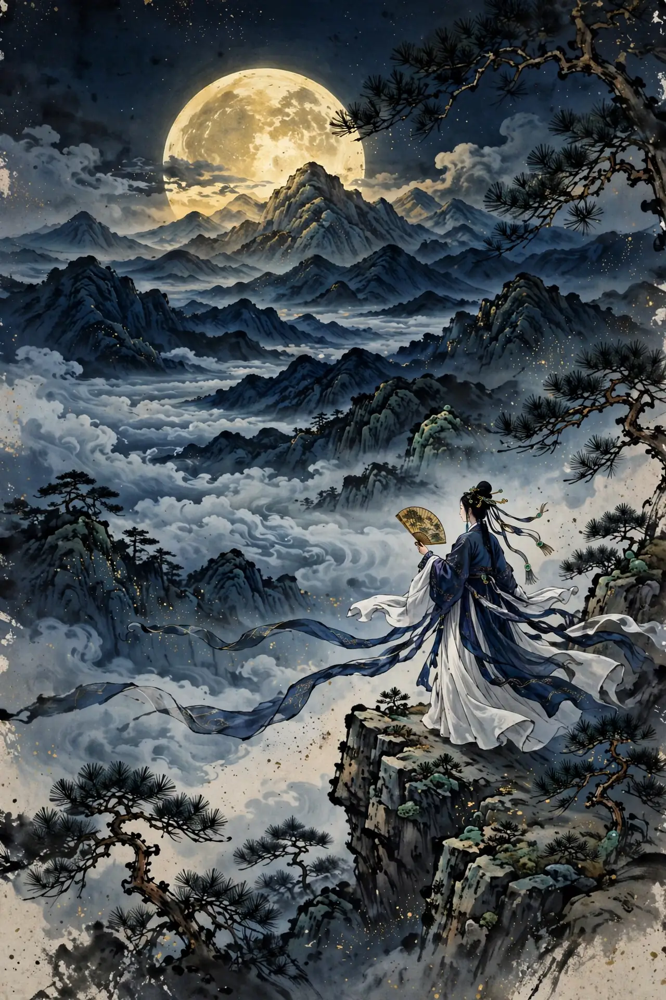

一사주 원국표와 오행 그래프
연·월·일·시 네 기둥을 천간·지지·지장간·십성·12운성까지 펼쳐 표로 세우고, 목·화·토·금·수의 비율을 그래프로 보여줍니다. 무엇이 넘치고 무엇이 비었는지가 모든 풀이의 출발점입니다.

五行時 · 오행시
오행의 흐름과 타이밍을 짚어주는 시간, 오행시.
타고난 목·화·토·금·수의 흐름과 앞으로 10년의 타이밍 —
이 문은 생년월일시를 건네야만 열립니다.
다섯 기운 중 무엇이 넘치고 무엇이 비었는지가, 당신의 성향과 타이밍을 가릅니다. 눌러서 하나씩 살펴보세요.
달문 月門 · 입구
이름은 부르지 않아도 됩니다. 다만 태어난 날과 시각만큼은 정확해야 합니다.
절기(節氣)가 바뀌는 경계에서 태어났다면, 한 시간이 평생의 지도를 바꾸기도 하니까요.
문이 열리는 중 0%
생년월일을 건네면 달이 차오르기 시작합니다.
입력하는 동안 오른쪽 네 기둥이 실시간으로 세워집니다. 날짜를 다 넣으면 당신의 일간(日干) — 사주의 주인 — 이 먼저 모습을 드러냅니다.
날짜를 모두 고르면, 입춘(立春)을 기준으로 한 연주와 당신의 일간이 여기에 먼저 뜹니다.
둘째 마당 · 결과 시각화
위에서 세운 명식 그대로입니다. 천간·지지·십성·지장간·12운성을 한 표에 펼치고, 오행 밸런스와 신강·신약, 10년 대운 타임라인으로 이어집니다. 대운 카드를 누르면 그 10년의 결이 바뀝니다.
여덟 글자(시주 없으면 여섯 글자) 기준 분포입니다.
일간을 돕는 세력(비겁·인성)과 쓰는 세력(식상·재성·관성)의 균형입니다.
—
—
각 대운의 천간·지지 십성을 기준으로 그 10년에 열리는 일·재물·관계의 결을 짚어 드립니다.
셋째 마당 · 심층 풀이
총운부터 대운·연운까지, 모든 문장은 방금 세운 명식의 일간·십성 분포·오행 과부족·신강신약에서 근거를 가져옵니다. 탭을 바꿔 읽어 보세요.
넷째 마당 · 명식 화첩
1080×1080 정사각 PNG입니다. 네 기둥·오행 배합·현재 대운·한 줄 총평을 한 장에 담았습니다.
먹색 바탕 화첩이 기본입니다. 「PNG로 저장하기」를 누르면 저장용 이미지가 화면 가득 열립니다. 앱 안 브라우저에서는 다운로드가 조용히 막히는 일이 많아, 열린 화면에서 공유해서 저장하거나 이미지를 길게 눌러 사진에 저장하는 방법이 가장 확실합니다.
다섯째 마당 · 보관함
「보관함에 담기」를 누르면 명식이 바로 아래에 쌓입니다. 이 기기의 브라우저가 저장을 허용하는 환경에서는 다시 방문해도 그대로 남고, 저장이 막힌 앱 안 브라우저에서는 화면을 닫으면 사라질 수 있으니 오래 간직할 명식은 화첩 PNG로도 저장해 두세요.
여섯째 마당 · 이메일로 받아보기
방금 본 풀이 전체 — 네 기둥과 오행, 신강·신약, 대운, 분야별 심층 풀이 7개 — 를 글자로 정리해 메일로 보낼 수 있습니다. 보관함이나 화첩 저장이 막히는 폰에서도, 메일함에 남겨 두면 언제든 다시 꺼내 볼 수 있습니다.
버튼을 누르면 쓰시는 메일 앱이 열리고, 받는 사람에 입력한 주소가, 본문에 풀이 전체가 채워져 있습니다. 메일 앱에서 보내기를 한 번 눌러 주셔야 그 주소로 도착합니다 — 이 페이지가 몰래 보내는 방식은 아닙니다. 화첩 이미지는 메일에 자동으로 붙지 않으니, 이미지는 위 화첩 저장 화면에서 따로 저장해 주세요.
아래 이미지가 저장용 화첩입니다. 이 화면에서 바로 저장해 주세요.
저장용 이미지를 준비하고 있어요.
안내자 案內者
점사를 봐주는 선생처럼, 한 분 한 분이 맡은 결이 다릅니다. 카드를 누르면 입구의 안내자가 그 선생으로 바뀝니다.
문이 열리면
입구는 시작일 뿐입니다. 네 기둥이 세워지면 아래 네 가지가 차례로 이어집니다.
연·월·일·시 네 기둥을 천간·지지·지장간·십성·12운성까지 펼쳐 표로 세우고, 목·화·토·금·수의 비율을 그래프로 보여줍니다. 무엇이 넘치고 무엇이 비었는지가 모든 풀이의 출발점입니다.
대운수(大運數)는 태어난 날부터 가까운 절기까지의 거리를 3일=1년으로 환산해 구합니다. 10년마다 바뀌는 큰 흐름이 당신의 지도에 나이와 함께 새겨집니다.
종합 사주는 총운부터 재물·직업·연애·건강·가족까지 장(章)을 나눠 깊이 읽고, 신년운세는 2026·2027의 달별 흐름까지 짚습니다. 연애운, 해몽·태몽도 각자의 장으로 따로 열립니다.
풀이의 핵심은 한 장의 카드로 남습니다. 내 일간과 오행, 올해의 한 줄을 담은 카드를 저장해 두고, 흐름이 궁금해질 때마다 다시 꺼내 볼 수 있습니다.
운세 장 運勢章
돈, 사람, 일, 인연 — 자꾸 같은 자리에서 막히는 데는 결이 있습니다. 궁금한 장 하나를 고르면 안내자가 먼저 세 마디를 건네고, 생일을 넣는 순간 첫 장(개안)이 무료로 열립니다. 이 랜딩 안에서 바로 이어집니다.
생일만 넣으면, 지나간 일부터 비춰 드려요 — 개안(첫 장)은 무료입니다.
나머지 장은 심층 풀이에서 이어집니다.
개안에서 열린 첫 장 너머의 장들은, 명식 전체와 대운의 흐름을 놓고 읽는 오행시 심층 풀이에서 열립니다.
개안은 간이 명식 기준의 미리보기입니다. 나머지 장은 오행시 심층 풀이에서 이어서 열립니다.
오행 五行
상생(相生)은 기운을 낳는 방향, 상극(相剋)은 기운을 누르는 방향입니다. 기운을 눌러 보세요.
목은 화를 낳고(木生火), 화는 토를, 토는 금을, 금은 수를, 수는 다시 목을 낳습니다. 반대로 목은 토를 누르고, 토는 수를, 수는 화를, 화는 금을, 금은 목을 누릅니다. 내 사주에서 어느 고리가 끊겼는지가 풀이의 핵심입니다.
묻는 말
아닙니다. 연·월·일 세 기둥만으로도 일간과 오행의 큰 흐름, 대운의 방향은 읽을 수 있습니다. 다만 시주는 자녀·말년·세부 타이밍과 이어지므로, 나중에라도 시각을 알게 되면 시주를 더해 다시 읽는 것을 권합니다. 입구에서 ‘출생 시각을 모릅니다’를 켜면 세 기둥으로 먼저 안내합니다.
입구의 달력 기준에서 ‘음력’을 고르고, 윤달에 태어났다면 ‘윤달에 태어났습니다’를 함께 켜 주세요. 음력은 양력으로 환산해 계산합니다(윤달 포함) — 환산한 양력 날짜로 절기를 가르고 네 기둥을 세우며, 입력 화면과 결과에 환산한 양력 날짜를 함께 보여줍니다.
학파가 갈리는 지점입니다. 자시(子時)가 시작되는 23시를 하루의 경계로 보는 야자시(夜子時) 해석에서는 다음 날 일주를 씁니다. 오행시는 야자시 옵션을 따로 두어, 두 해석을 비교해 볼 수 있게 했습니다.
그냥 계산만 하면 저장되지 않습니다. 계산은 지금 보고 있는 화면 안에서만 이루어지고 서버로 전송되지 않습니다. 다만 아래 보관함에서 「보관함에 담기」를 직접 누르면 그 명식만 보관함에 담깁니다. 브라우저가 저장을 허용하는 환경에서는 다시 방문해도 남아 있고, 저장이 막힌 앱 안 브라우저에서는 화면을 닫으면 사라질 수 있어 화첩 PNG 저장을 함께 권합니다.
태양 황경으로 12절기의 절입 시각을 구해 입춘 기준 연주와 오호둔법(五虎遁法) 월주를 세우고, 일주는 기준일 오프셋으로, 시주는 오자둔법(五子遁法)과 서울 진태양시 보정으로 구합니다. 운세를 지어내는 것이 아니라, 역법(曆法) 계산으로 기둥을 세운 뒤 명리의 원리로 읽습니다.